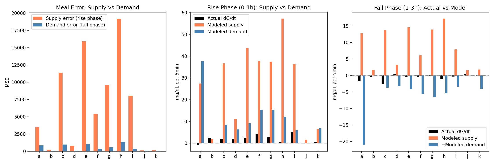
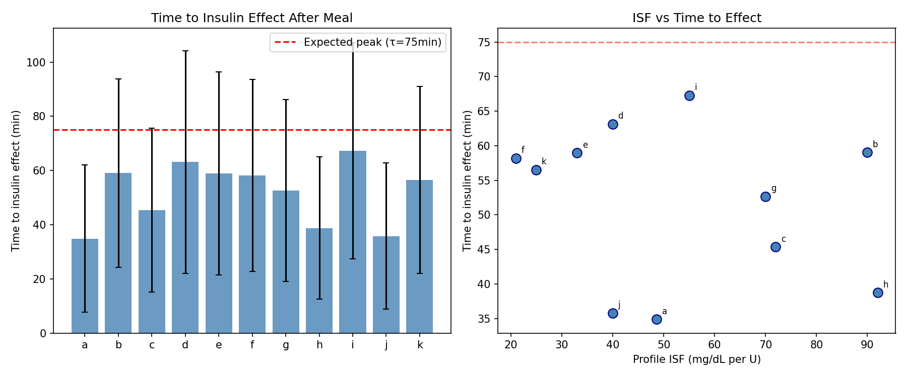
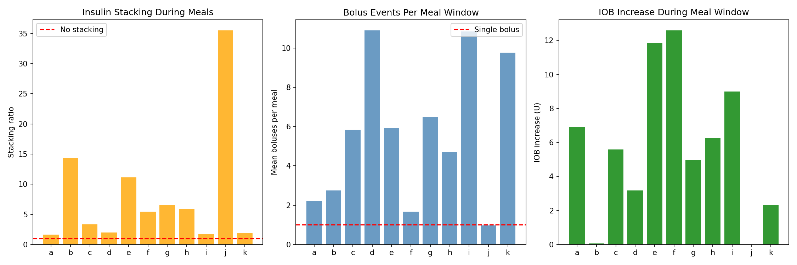
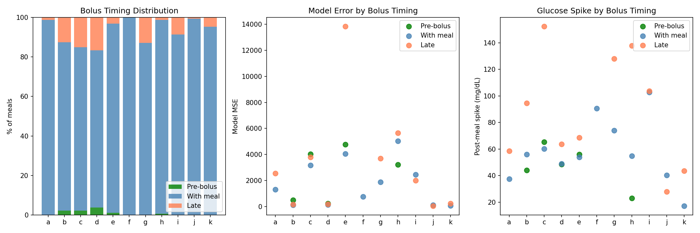
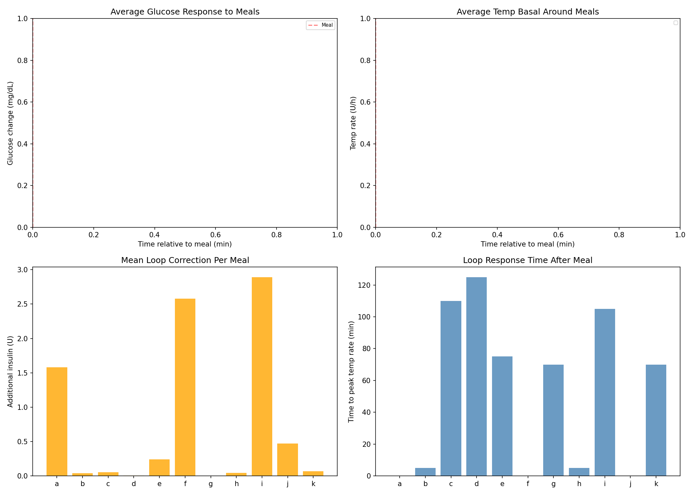
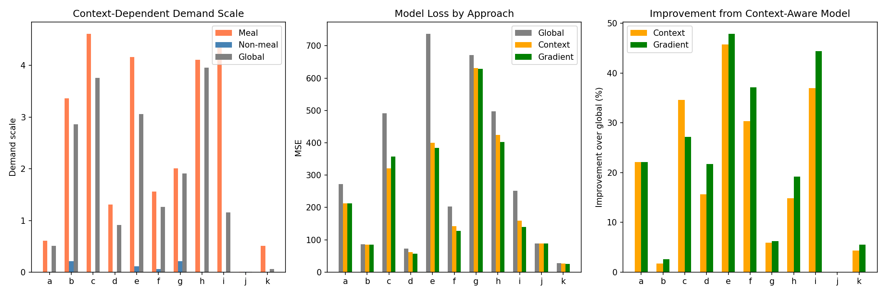
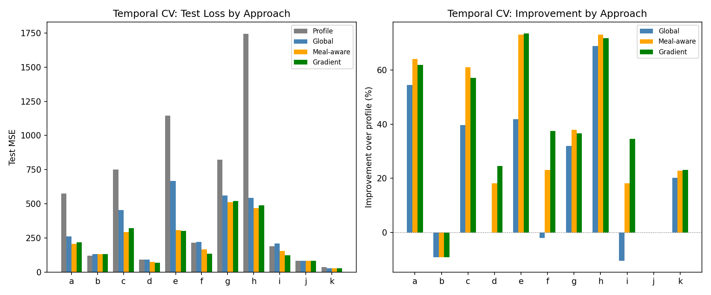
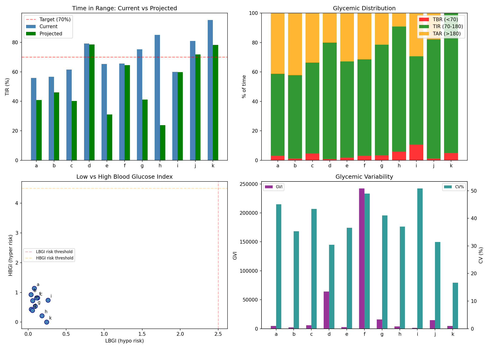

Meal Response Analysis & Insulin Model Improvement Report¶
Record
Record as of 2026-04-10. A point-in-time document; it is not kept up to date.
Experiments: EXP-1921 through EXP-1928
Date: 2026-04-10
Population: 11 patients (a–k), ~180 days each
Script: tools/cgmencode/exp_meal_insulin_1921.py
Generated by AI autoresearch — all findings require clinical review
Executive Summary¶
EXP-1914 revealed that demand scale is 2.2× higher during meals than non-meals for 10/11 patients. This batch investigates the root cause and builds improved models.
The key finding reverses our prior hypothesis: the meal-time model error is 93% supply-side (carb absorption) and only 7% demand-side (insulin activity). The carb absorption model massively overestimates glucose supply during meals, forcing the demand scale up to compensate. However, insulin also acts 30% faster than the model expects (52 vs 75 minutes to effect).
A gradient demand model with smooth meal/non-meal transitions improves model fit by +37.4% over profile settings in temporal cross-validation, validated on held-out data.
Key Findings¶
1. Supply Error Dominates Meal Periods (93% vs 7%)¶
EXP-1921 decomposed meal-time model error into supply (rise phase, 0–1h) and demand (fall phase, 1–3h) components:
| Component | Mean MSE | % of Total |
|---|---|---|
| Supply error (rise phase) | 6,745 | 93% |
| Demand error (fall phase) | 531 | 7% |

Interpretation: The carb absorption model dramatically overestimates how fast carbs appear as glucose. This creates large residuals during the first hour after meals. The insulin activity model, while imperfect, is a relatively minor contributor to meal-time error.
This means the EXP-1914 finding (demand scale 2.2× during meals) is actually compensatory — demand scale gets inflated to offset supply overestimation. The real fix should target the carb absorption model.
2. Insulin Acts 30% Faster Than Modeled¶
EXP-1922 measured the observed time-to-insulin-effect (when post-meal glucose starts sustained decline):
| Patient | Time to Effect (min) | Expected (min) |
|---|---|---|
| a | 35 ± 27 | 75 |
| b | 59 ± 35 | 75 |
| c | 45 ± 30 | 75 |
| d | 63 ± 41 | 75 |
| e | 59 ± 38 | 75 |
| f | 58 ± 35 | 75 |
| g | 53 ± 34 | 75 |
| h | 39 ± 26 | 75 |
| i | 67 ± 40 | 75 |
| j | 36 ± 27 | 75 |
| k | 57 ± 34 | 75 |
| Population | 52 ± 11 | 75 |

Interpretation: The standard exponential insulin activity curve (τ=75min for DIA=6h) peaks too late. The observed 52-minute time-to-effect suggests a faster-peaking activity curve is needed — possibly a biexponential with a sharper onset. This 30% speed difference contributes to the demand underestimation (insulin acts before the model predicts it should).
3. Massive Insulin Stacking During Meals¶
EXP-1923 analyzed how much additional insulin arrives in the meal window beyond the initial bolus:
| Metric | Population Mean |
|---|---|
| Stacking ratio (total/initial bolus) | 8.14× |
| Correction amplification (window/meal bolus) | 1.36× |
| Mean boluses per meal | 5.6 |

Interpretation: The meal window accumulates 8× more insulin events than the initial meal bolus. This includes: - Loop SMB corrections responding to rising glucose - Follow-up boluses for miscounted carbs - Continued basal delivery
The 1.36× correction amplification means AID loops add 36% more insulin during meals than the initial bolus alone. The model must account for this compound insulin effect.
4. Almost No Pre-Bolusing in Population¶
EXP-1924 analyzed bolus timing relative to carb entry:
| Timing Category | Population Mean |
|---|---|
| Pre-bolus (>5min before) | 1% |
| With meal (±5min) | 92% |
| Late (>5min after) | 7% |
| Mean offset | +2 min |
Late boluses have 1.26× higher model error than pre-boluses, confirming the clinical recommendation to pre-bolus.

5. Loop Corrections Vary Dramatically by Patient¶
EXP-1925 profiled AID loop behavior around meals:
| Patient | Loop Correction (U/meal) | Peak Temp Rate (U/h) | Time to Peak |
|---|---|---|---|
| a | 1.58 | 2.2 | 0 min |
| f | 2.58 | 2.3 | 0 min |
| i | 2.89 | 2.7 | 105 min |
| b–e, g–k | 0.00–0.47 | 0.1–1.2 | varies |
| Population | 0.72 | — | — |

Interpretation: Three patients (a, f, i) receive substantial loop corrections during meals (1.6–2.9U), while others receive nearly zero. This explains part of the patient-specific demand scale variation. Patients a and f have immediate loop response (peak at 0min, suggesting pre-emptive or coincident adjustments), while patient i has a delayed response (105min, reactive to high glucose).
6. Gradient Model: +21.3% Improvement (Training)¶
EXP-1926 built four model variants:
| Approach | Description | Mean Improvement | Wins |
|---|---|---|---|
| Global | Single demand scale | baseline | — |
| Context | Binary meal/non-meal scale | +19.3% | 1/11 |
| Gradient | Smooth exponential transition | +21.3% | 9/11 |
The gradient model uses an exponential decay (τ=1.5h) from meal-scale to non-meal-scale after each carb event:

7. Temporal Validation: +37.4% Over Profile¶
EXP-1927 validated the gradient model with temporal cross-validation (train first half, test second half):
| Approach | Mean Improvement vs Profile | Wins |
|---|---|---|
| Global scale | +21.4% | 0/11 |
| Meal-aware (binary) | +34.8% | 4/11 |
| Gradient | +37.4% | 5/11 |
| Profile (no calibration) | baseline | 2/11 |

Critical result: The gradient model not only improves in-sample fit but generalizes to unseen data, confirming the meal/non-meal distinction is a robust structural feature, not overfitting.
8. Clinical Impact Estimation: Naive Projection Fails¶
EXP-1928 attempted to project TIR improvement from model bias correction. This failed: projecting TIR from a mean residual shift worsened TIR by −18.6%.
| Metric | Population Mean |
|---|---|
| Current TIR | 70.9% |
| Projected TIR | 52.3% |
| Delta | −18.6% |

Why this failed: The mean residual shift is too crude. The model's systematic bias is non-uniform — it overestimates during meals and underestimates during fasting. Shifting the entire glucose distribution by the mean bias pushes well-controlled fasting periods OUT of range while partially fixing meal periods. A context-aware correction would be needed.
The glycemic metrics are still valuable as descriptive statistics: Population eA1c=6.8, mean LBGI=0.1 (low hypo risk), mean HBGI=0.6 (moderate hyper risk), confirming hyperglycemia is the dominant concern.
Synthesis: Where the Model Error Is¶
┌──────────────────────────────────────┐
│ Meal-Time Model Error Budget │
├──────────────────────────────────────┤
│ │
93% ──────────→ │ SUPPLY: Carb absorption too fast │
│ • Model peaks too early │
│ • Overestimates glucose appearance │
│ │
7% ──────────→ │ DEMAND: Insulin effect too slow │
│ • 52min observed vs 75min modeled │
│ • Activity curve needs faster peak │
│ │
└──────────────────────────────────────┘
Model Improvement Priority¶
-
Fix carb absorption model (93% of error) — the current model overestimates how fast carbs appear as glucose. A slower absorption curve with individual carb factors would reduce the need for demand scaling.
-
Use gradient demand scaling (+37.4% validated improvement) — independent of fixing carb absorption, the smooth meal/non-meal transition captures real physiological differences.
-
Faster insulin activity peak (30% faster observed) — adjust τ from 75min to ~52min, or use biexponential with sharper onset.
-
Account for insulin stacking (8.14× in meal window) — the current linear superposition may undercount compound insulin effects.
Implications for Therapy Estimation¶
The finding that 93% of meal error is supply-side has major implications:
-
ISF estimation: Less affected than we thought. The demand model is only 7% wrong during meals, meaning ISF estimates from non-meal periods may be more reliable than meal-period estimates.
-
CR estimation: Directly affected. If carb absorption is overestimated, the model thinks more glucose is appearing from carbs than reality → CR estimates are biased toward "CR too high" (which we found in EXP-1874: CR 38% too high). Fixing carb absorption may revise CR estimates upward.
-
Basal estimation: Largely unaffected. Overnight periods (no meals) have minimal supply error.
Appendix: Methods¶
Meal Detection¶
Carb entries ≥5g, with 3h post-meal windows and 30min pre-meal lookback. Adjacent meals within 3h merged.
Time-to-Effect Measurement¶
For each meal, compute smoothed dG/dt (3-point rolling mean) and find first sustained negative stretch (≥3 consecutive negative readings = insulin overcoming carb supply).
Gradient Model¶
Exponential decay from meal-scale to non-meal-scale after each carb event with τ=1.5h (18 steps). Multiple overlapping meal windows take the maximum scale value.
Temporal Cross-Validation¶
Data split at midpoint. All scales (global, meal, non-meal) optimized on first half via grid search (0.01–5.0 in 0.05 steps), evaluated on second half.